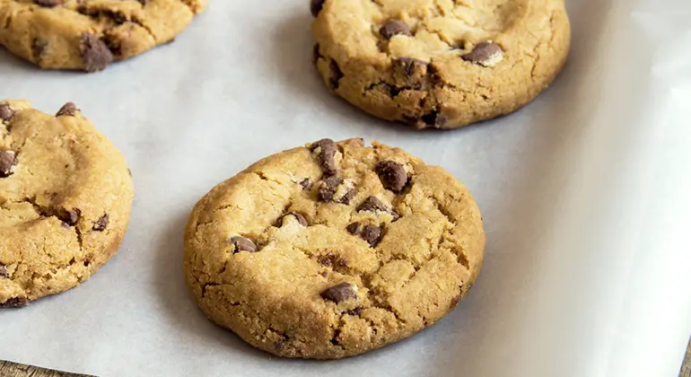

Ingredienser (ca. 12-15 stk.)
- 125 g smør (blødt)
- 100 g sukker
- 100 g brun farin
- 1 æg
- 1 tsk vaniljesukker
- 200 g hvedemel
- 1 tsk bagepulver
- 0,5 tsk salt
- 150 g mørk chokolade
Fremgangsmåde
Først tænder du ovnen på 180°C. Derefter pisker du smør, sukker og brun farin sammen, indtil det bliver lyst og luftigt. Så tilsætter du æg og vanilje, og rører det godt sammen. I en anden skål blander du mel, bagepulver og salt, og det hælder
du langsomt i dejen, mens du rører. Når dejen er samlet, vender du chokoladen i. Herefter former du små kugler af dejen med en ske og lægger dem på en bageplade med bagepapir, med god afstand imellem. Til sidst bager du cookiesene i 10-12
minutter.
Anmeldelser
"Verdens bedste cookies!"
★★★★★
- Anne Mette
"Super lækre, men jeg ville give dem lidt længere tid i ovnen."
★★★☆☆
- Maria